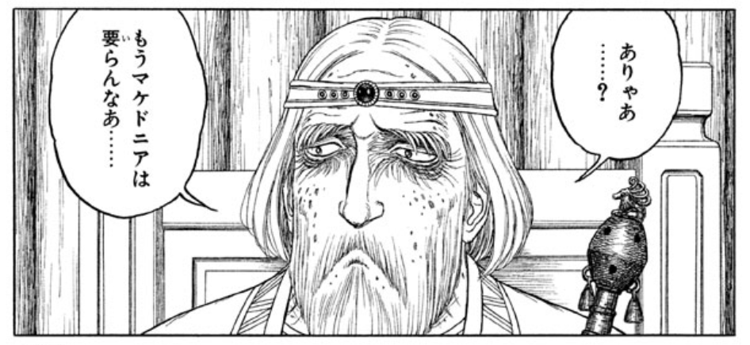

最近読んだ本：『スキタイと匈奴』『ケルトの水脈』『トロイア戦争全史』『経済学と倫理学』
公開日：
今月は身内に不幸があって、本は少し読んだけど、ブログに書く気が起こらなかった（あまり考え事をしたくないときは、プログラミングのようなロジカルなことをしている方が楽しく、憂さが晴れるようだ）。とはいえ、何も書かないのもあとで振り返るときにアレなので。
")
興亡の世界史 スキタイと匈奴 遊牧の文明 (講談社学術文庫)
- 作者: 林俊雄
- 出版社/メーカー: 講談社
- 発売日: 2017/01/12
- メディア: 文庫
- この商品を含むブログを見る
遊牧民の歴史を考古学的成果（＋文献研究）を元に俯瞰した感じ。『歴史』を読んだあとだったので、とくにスキタイの部分は知識を整理するのに役立った。

アタイアス王のイメージがちょっと変わったのだけど、それはまた今度。
")
- 作者: 原聖
- 出版社/メーカー: 講談社
- 発売日: 2016/12/10
- メディア: 文庫
- この商品を含むブログを見る
ケルト文明の話。なんか世界史で触れるガリア（ケルト）とアイルランドあたりのケルトが繋がらんなーというのは前々から薄々思っていたのだけど、そこら辺をクリアにしてくれる本。ちょっとブルターニュ半島（アルモリカ）の考古学っぽい話の比重が大きすぎた気もするけど。
")
- 作者: 松田治
- 出版社/メーカー: 講談社
- 発売日: 2008/09/10
- メディア: 文庫
- 購入: 1人 クリック: 4回
- この商品を含むブログを見る
ペロッと読めて面白かった。個別の話は有名で、自分でも知っているものばかりだったけど、こうやって繋げて読んだのは初めてかもしれない。
登場人物のイメージ
- アガメムノン：もうちょい器量あってもええやろ
- メネラオス：お兄ちゃんに頼りすぎ
- アキレウス：まさにこれ「人間だけを殺す機械かよ！？」
- ヘクトル：一番好き。死んじゃったときは悲しかった
- パリス：ヘタレなのに弓は上手いんだな
- プリアモス：子ども殺されすぎて可哀そう……
- オデュッセウス：いくら頭がよくても、仲間をハメ殺しにするヤツは好きになれない
- ネストル：俺の好み系のジジイ
- 大アイアース：器量狭すぎ
- 小アイアース：ほんとこいつは……
- クリュタイムネーストラー：何回読んでも名前が覚えられん
- アイネイアス：トロイア側では使える方だけど、イマイチな活躍だったので『アエネーイス』読む
- サルペドンとグラウコス：俺はトロイア派だと思った
- 神さまたち：人間のやることに口を挟みすぎだし！
あと、地理の表現がなんとなくわかりやすかったのが印象的。ギリシア史関連の本は何冊か読んだけど、地理的なイメージを植え付けようとする表現にはあまり出会わなかった気がする。
")
- 作者: アマルティアセン,Amartya Sen,徳永澄憲,松本保美,青山治城
- 出版社/メーカー: 筑摩書房
- 発売日: 2016/12/07
- メディア: 文庫
- この商品を含むブログ (2件) を見る
思ったより薄かった。センの思想のエッセンスって感じで、とくに新しい知見なかったけど、脳みそが少し整理された気がする。